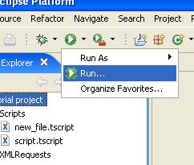

To duplicate a launch configuration, click on the arrow at the right of the run icon. From the shown menu, select "Run". This action will show a new frame that let the user manage launch configurations.

To duplicate a configuration for the Toolbox script execution, select it and click on the "Duplicate" icon.
Now click "Apply". If you want to test the new configuration, click "Run".